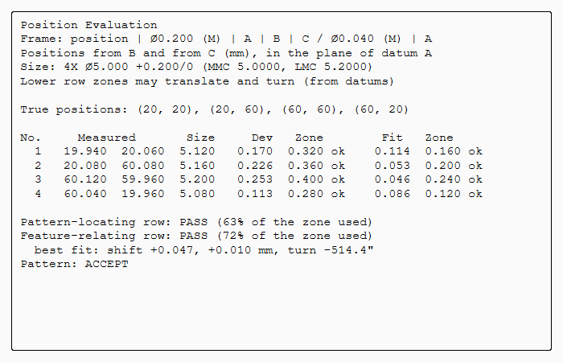

Inspection: measured parts and gauges
The PMI states what a part must be. These tools take the next step: the part as measured, and the gauges it is measured with.
-
Position Evaluation decides from measured data whether a pattern of holes or pins meets its position frame, single or composite.
-
Gauge Study tells whether a gauge’s repeatability is small enough for the tolerance it checks.
-
Measurement uncertainty on a PMI turns its limits into acceptance limits, so that a doubtful reading never accepts a part.
All three are on the Analysis tab (Tolerance group) and the PMI tab (Inspection group). Each makes a feature in the Part Navigator that is kept with the part and recomputes when its PMI changes.

Position Evaluation
Select a PMI position frame on the pattern’s cylindrical faces, then click Position Evaluation.
-
The true positions come from the model. They are measured in the frame’s datum reference frame: from the secondary datum and from the tertiary datum, in the plane of the primary datum. The frame needs three plane datums with datum feature symbols.
-
The sizes and their MMC come from the PMI diameter on the same faces.
-
Type the measured positions and sizes into the table, one row per feature, as the CMM reports them.
The table starts with every feature perfect at MMC.
| Row | How it is decided |
|---|---|
Upper row (PLTZF) |
Each axis must lie in its zone, which is fixed to the datums by the basic dimensions. The deviation is diametral: twice the distance from the true position. At MMC the zone grows by the bonus, which is the size’s departure from MMC. |
Lower row (FRTZF) |
The zones keep their basic spacing, but the framework may move. It translates, and it also turns unless the datums it repeats stop the turn: a primary plane only orients the framework, so it can still turn in that plane. The row passes when one position of the framework holds every axis in its zone. This is Cogorno’s paper gauge (ch. 13), done as a minimax fit: the largest ratio of deviation to zone is made as small as it can be. |
Size |
A size beyond MMC, or beyond LMC, rejects the feature. |
The result gives the share of each row’s zone used, the Verdict (ACCEPT or REJECT), and the best-fit shift and turn of the lower row. Lower row zones overrides how the lower row may move: From datums, Translate and turn, Translate only or Fixed. With Translate only you can see what repeating a secondary datum would cost.
nxstyle/position_eval.py holds the method.
Its unit tests check the fit against a brute-force search, and check that a perfect pattern which is moved and turned fits exactly.
Measurement uncertainty, TUR and acceptance limits
Every PMI dimension and frame has a Measurement uncertainty U: the expanded uncertainty (k = 2) of the method that checks it. You can type it in the dialog or set it in the property view. With U given, the inspection plan adds these to the characteristic:
-
TUR: the tolerance span over 2U (ANSI/NCSL Z540.3). 4:1 is the usual minimum and 10:1 the traditional rule.
-
Acceptance limits (ISO 14253-1): the specification zone reduced by U at each limit. A geometrical tolerance is reduced only at its upper limit, because zero is not a limit. A reading within U of a limit proves neither conformance nor non-conformance. When U leaves no acceptance zone, the plan says that the method cannot prove conformance.
The release package’s inspection_plan.csv has the columns uncertainty, tur, accept_lower and accept_upper, and segment for the two rows of a composite frame.
Gauge Study
Select a PMI dimension or frame, then click Gauge Study. Type the gauge’s name and the readings, one line per part with its repeated readings. The study uses the range method (Drake, Dimensioning and Tolerancing Handbook, ch. 25):
σ = R̄ / d2 (d2 = 1.128 for two readings per part, up to 3.078 for ten) % of tolerance = k σ / tolerance
The tolerance comes from the PMI: its size limits, its fit class, its general tolerance, or its frame’s zone. For Spread choose 6 sigma (AIAG MSA) or 3 sigma (Drake ch. 25). Drake’s worked example uses 3σ; 6σ gives twice the share.
Under 10 % the gauge is acceptable. From 10 % to 30 % it may be acceptable, depending on the risk and on the cost of a better gauge. Over 30 % it is not acceptable. The range method of a single operator gives repeatability only, not reproducibility.
Tutorial AA evaluates a composite pattern. Tutorial AB states the uncertainties and runs two gauge studies, one of them Drake’s example.